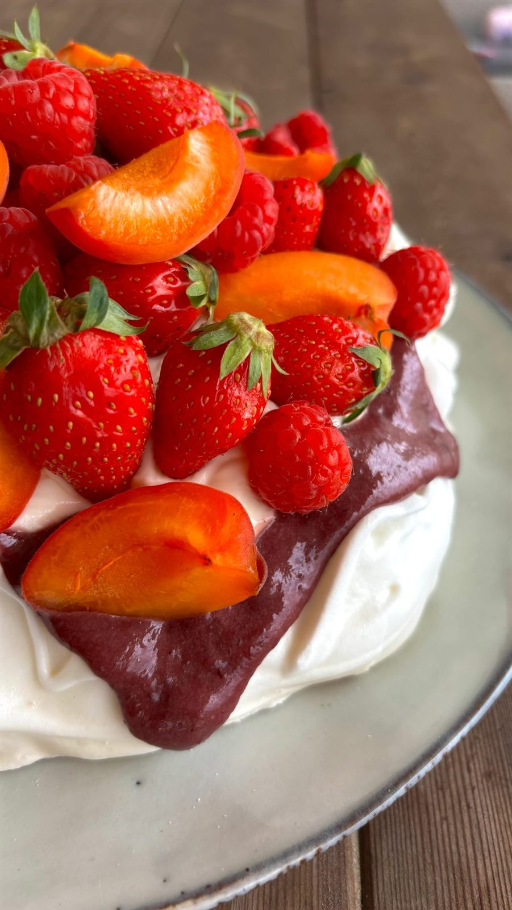

Une grande meringue rustique, croquante dehors et fondante comme un marshmallow dedans, un curd aux fruits rouges, une chantilly mascarpone et une montagne de fruits frais.
Temps total : 3 h 30
Monter les blancs en neige.
Ajouter progressivement le sucre semoule tout en continuant de fouetter jusqu’à obtenir une meringue brillante.
Incorporer délicatement le sucre glace tamisé, et la maïzena.
Déposer la meringue sur une plaque recouverte de papier cuisson en formant un grand disque rustique. Pas besoin de pochage : les jolies irrégularités font tout le charme de cette pavlova.
Enfourner à 95°C pendant 2 h 20.
Laisser refroidir complètement dans le four entrouvert.
Résultat : une coque délicieusement croquante à l’extérieur et un cœur fondant, moelleux, presque marshmallow.
Mélanger, les jaunes d’œufs, le sucre et la maïzena.
Faire chauffer à feu doux le coulis
Hors du feu, incorporez le coulis dans le 1er mélange. Puis remettre à feu doux sans cesser de remuer jusqu’à épaississement.
Filmer au contact et laisser refroidir complètement. (C’est très important)
Placer tous les ingrédients bien froids dans le bol du robot.
Fouetter jusqu’à obtenir une chantilly ferme et onctueuse.
Réserver au frais jusqu’au montage.
Déposer une généreuse couche de chantilly mascarpone sur la meringue.
Ajouter quelques cuillerées de curd fruits rouges.
Recouvrir d’une nouvelle couche de chantilly.
Terminer par une montagne de fruits frais.
Le petit plus de LaurieServir immédiatement ou après un court passage au frais, et alors si t’as une boule de glace citronnée à servir avec BANGER !
Retrouvez toutes mes recettes, et suivez les nouveautés chaque semaine sur Instagram.